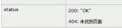

JSP
https://blog.csdn.net/rubulai/article/details/91585770
什么是JSP
- jsp是 Java server pages 的缩写，即Java的服务器页面
- jsp的主要作用是代替Servelt 回传html页面的程序。
- 因为Servlet回传html页面数据极其繁琐，writer.write("html代码")，开发和维护成本极高。
- Servlet 回传 html 页面数据的代码：
public class PringHtml extends HttpServlet {
@Override
protected void doGet(HttpServletRequest req, HttpServletResponse resp) throws ServletException,
IOException {
// 通过响应的回传流回传 html 页面数据
resp.setContentType("text/html; charset=UTF-8");
PrintWriter writer = resp.getWriter();
writer.write("<!DOCTYPE html>\r\n");
writer.write(" <html lang=\"en\">\r\n");
writer.write(" <head>\r\n");
writer.write(" <meta charset=\"UTF-8\">\r\n");
writer.write(" <title>Title</title>\r\n");
writer.write(" </head>\r\n");
writer.write(" <body>\r\n");
writer.write(" 这是 html 页面数据 \r\n");
writer.write(" </body>\r\n");
writer.write("</html>\r\n");
writer.write("\r\n");
}
}public class PringHtml extends HttpServlet {
@Override
protected void doGet(HttpServletRequest req, HttpServletResponse resp) throws ServletException,
IOException {
// 通过响应的回传流回传 html 页面数据
resp.setContentType("text/html; charset=UTF-8");
PrintWriter writer = resp.getWriter();
writer.write("<!DOCTYPE html>\r\n");
writer.write(" <html lang=\"en\">\r\n");
writer.write(" <head>\r\n");
writer.write(" <meta charset=\"UTF-8\">\r\n");
writer.write(" <title>Title</title>\r\n");
writer.write(" </head>\r\n");
writer.write(" <body>\r\n");
writer.write(" 这是 html 页面数据 \r\n");
writer.write(" </body>\r\n");
writer.write("</html>\r\n");
writer.write("\r\n");
}
}- jsp回传一个简单html页面的代码：
<%@ page contentType="text/html;charset=UTF-8" language="java" %>
<html>
<head>
<title>Title</title>
</head>
<body>
这是 html 页面数据
</body>
</html><%@ page contentType="text/html;charset=UTF-8" language="java" %>
<html>
<head>
<title>Title</title>
</head>
<body>
这是 html 页面数据
</body>
</html>JSP的本质是什么
- jsp页面本质上是一个Servlet程序
- 当我们第一次访问jsp页面的时候。Tomcat服务器会把jsp页面翻译成一个java源文件。并且对他进行编译为.class字节码程序。如a.jsp,就被翻译为a_jsp.java类，而它继承了HttpJspBase类，而HttpJspBase继承了HttpServlet类。也就是说，翻译出来的是一个Servlet程序。
- jsp页面中的html代码也是通过输出流out.wirte()把html页面数据回传给客户端。
JSP的指令元素及脚本元素
- 指令语法
<%@ page contentType="text/html;charset=UTF-8" language="java" %>
contentType: 表示jspfanhui的数据类型是什么，及指定返回的数据编码格式
pageEncoding: 表示当前jsp页面的编码格式
isErrorPage="true" 开启后jsp会在_jspService()中提供一个exception对象 - 脚本元素
- <% %> : java代码
- 代码脚本的作用是: 编写java代码
- 所有的代码脚本都会被翻译到_jspService()方法中
- 由于代码脚本翻译的内容都在_jspService()方法中，所以_jspService()方法中的对象都可以直接使用。
- <%= %> : 表示式值 out.println();
- 表达式脚本的作用是: 在jsp页面上输出数据。
- 所有的表达式脚本都会被翻译到_jspService()方法中
- 表达式脚本都会被翻译为out.print()语句输出到页面上
- 由于表达式脚本翻译的内容都在_jspService()方法中，所以_jspService()方法中的对象都可以直接使用。
- <%! %> : 设置当前JSP的成员变量(因为jsp本身是个java类文件)
- <% %> : java代码
JSP的九大内置对象
- jsp的内置对象,是指Tomcat在翻译jsp页面成为Servlet源代码后，内部提供的九大对象叫内置对象。
- request 请求对象
- response 响应对象
- pageContext jsp的上下文对象
- session 会话对象
- application ServletContext对象
- config ServletConfig对象
- out jsp输出流对象
- page 指向当前jsp的对象
- exception 异常对象
JSP四大域对象
- 域对象是可以像Map一样存取数据的对象。四个域对象功能一样。不同的是它们对数据的存取范围。
- pageContext PageContextImpl类 当前jsp页面范围内有效
- request HttpServletRequest类 一次请求内有效
- session HttpSession类 一个会话范围内有效(打开浏览器访问服务器，直到关闭浏览器会话结束,只要浏览器没关闭都共享这一个session，不同浏览器不共享session，但共享application)
- application ServletContext类 整个web工程范围内都有效(只要web工程不停止，数据都在)
JSP的out输出流对象和response.getWriter()输出流的区别
- out流就是response.getWriter()得到的
- jsp翻译之后，底层源代码都是用out来进行输出，所以在jsp页面中，一般统一使用out.print()方法来输出
- out.wirte()是用来输出字符串的
- out.print()，如果参数不是字符串，会先转换成String，然后再输出
JSP里的常用标签
- jsp静态包含
<%@ include file="/资源名称" %>- 静态包含不会翻译被包含的jsp页面
- 静态包含其实是把被包含的jsp页面的代码拷贝到包含的位置执行输出
- file属性指定你要包含的jsp页面的路径
- "/" 表示为 http://ip:port/工程路径/ 映射到代码的web目录
- jsp动态包含
<jsp:include page="/footer.jsp" %></jsp:include>- 动态包含会把被包含的jsp页面翻译成java代码
- 动态包含底层代码使用如下代码去调用被包含的jsp页面执行输出
JspRuntimeLibraray.include(request,response,"/include/footer.jsp", out, false);
调用页面把自己的request，response，out对象都传递给了被调用页面去使用 - page属性是指定你要包含的jsp页面的路径
- 动态包含也可以像静态包含一样。把被包含的内容执行输出到包含位置
- 动态包含还可以传递参数
// 主页面传参 <jsp:include page="/footer.jsp"> <jsp:param name="username" value="wyn"> <jsp:param name="password" value="root"> </jsp:include> // 子页面获取参数 <%=request.getParameter('username')%> <%=request.getParameter('password')%>// 主页面传参 <jsp:include page="/footer.jsp"> <jsp:param name="username" value="wyn"> <jsp:param name="password" value="root"> </jsp:include> // 子页面获取参数 <%=request.getParameter('username')%> <%=request.getParameter('password')%> - jsp请求转发
- 以前是用servlet代码 <%request.getRequestDispatcher("/scope2.jsp").forward(request,response);%>
来实现请求转发，现在可以通过jsp标签来实现 - <jsp:forward page="/scope2.jsp"></jsp:forward>
- 以前是用servlet代码 <%request.getRequestDispatcher("/scope2.jsp").forward(request,response);%>
- <jsp:forward page=""></jsp:forward>jsp标签形式请求转发
和<jsp:include page=""></jsp:include>si动态包含
内部都是用<jsp:param name="" value="">来传值给目标页面
什么是Listener监听器？
- Listener 是JavaEE三大组件之一。三大组件分别是：Servlet程序、Filter过滤器、Listener监听器。
- Listener 监听器是JavaEE的规范之一。规范就是接口。所以Listener就是JavaEE中的接口。
- 监听器的作用是，监听某种事物的变化。然后通过回调函数，反馈给客户(程序)去做一些相应的处理。
ServletContextListener监听器
- ServletContextListner可以监听ServletContext对象的创建和销毁。
- ServletContext对象在web工程启动的时候创建，在web工程停止的时候销毁。
- 监听到创建和销毁之后都会分别调用ServletContextListner监听器的方法反馈。
- 两个方法分别是：
在ServletContext对象创建之后马上调用，做初始化- public void contextInitialized(ServletContextEvent sce);
在ServletContext对象销毁之后调用 - public void contextDestroyed(ServletContextEvent sce);
- public void contextInitialized(ServletContextEvent sce);
- 如何使用ServletContextListener监听器监听ServletContext对象。
- 编写一个类去实现ServletContextListener
- 实现其两个回调方法
- 到web.xml中去配置监听器
EL表达式
- EL表达式主要是在jsp页面中输出数据。代替jsp中的表达式脚本在jsp页面中进行数据的输出。
- 当EL表达式输出的为null时，页面中会显示为""空串。
- 主要是输出域对象中的数据。pageContext，request，session，application
- 当四个域中都有相同的key的数据的时候，EL表达式会按照四个域的从小到大的优先级去输出。
- EL表达式也可以输出Bean对象和Bean的属性(会根据属性名去寻找get方法，必须写get方法才可以输出)
empty运算
empty运算可以判断一个数据是否为空，如果为空，则输出为true，不为空为false
以下几种情况为空：
- 值为null的时候，为空
- 值为空串的时候，为空
- 值为Object类型的数组，长度为零的时候
- list集合，元素个数为零
- map集合，元素个数为零
"."点运算和[]中括号运算符
.点运算，可以输出Bean对象中某个属性的值,也可以输出Map集合中某个key对应的value
[]中括号运算，可以输出有序集合中某个元素的值
并且[]中括号运算，还可以输出map集合中key里含有特殊字符的key的值
EL表达式的11个隐含对象
EL表达式中11个隐含对象，是EL表达式中自己定义的，可以直接使用。
| 变量 | 类型 | 作用 |
|---|---|---|
| pageContext | pageContextImpl | 它可以获取jsp中的九大内置对象 |
| pageScope | Map<String,Object> | 它可以获取pageContext域中的数据 |
| requestScope | Map<String,Object> | 它可以获取Request域中的数据 |
| sessionScope | Map<String,Object> | 它可以获取Session域中的数据 |
| applicationScope | Map<String,Object> | 它可以获取ServletContext域中的数据 |
| param | Map<String,String> | 它可以获取请求参数的值 |
| paramValues | Map<String,String[]> | 它也可以获取请求参数的值，获取多个值的时候使用 |
| header | Map<String,String> | 它可以获取请求头的信息 |
| headerValues | Map<String,String[]> | 它可以获取请求头的信息，它可以获取多个值的情况 |
| cookie | Map<String,Cookie> | 它可以获取当前请求的Cookie信息 |
| intParam | Map<String,String> | 它可以获取在web.xml中配置的 |
EL获取四个特定域中的属性
pageScope ====== pageContext域
requestScope ====== Request域
sessionScope ====== Session域
applicationScope ===== ServletContext域
和获取对象属性一样
EL pageContext对象的使用
- 获取请求协议
- 获取请求的服务器ip或域名
- 获取请求的服务器端口
- 获取当前工程路径
- 获取请求方法(GET或POST)
- 获取客户端ip地址
- 获取会话的唯一标识
- jsp获取方式
<%= request.getScheme() %> <%= request.getServerName() %> <%= request.getServerPort() %> <%= request.getContextPath() %> <%= request.getMethod() %> <%= request.getRemoteHost() %> <%= session.getId() %>
<%= request.getScheme() %>
<%= request.getServerName() %>
<%= request.getServerPort() %>
<%= request.getContextPath() %>
<%= request.getMethod() %>
<%= request.getRemoteHost() %>
<%= session.getId() %> - EL获取方式
// 企业开发的一个技巧，会把request对象放入pageContext域中
<% pageContext.setAttribute("req", request) %>
${req.scheme}
${req.serverName}
${req.serverPort}
${req.contextPath}
${req.method}
${req.remoteHost}
${pageContext.session.id}
${pageContext.request.scheme}
${pageContext.request.serverName}
${pageContext.request.serverPort}
${pageContext.request.contextPath}
${pageContext.request.method}
${pageContext.request.remoteHost}
${pageContext.session.id}// 企业开发的一个技巧，会把request对象放入pageContext域中
<% pageContext.setAttribute("req", request) %>
${req.scheme}
${req.serverName}
${req.serverPort}
${req.contextPath}
${req.method}
${req.remoteHost}
${pageContext.session.id}
${pageContext.request.scheme}
${pageContext.request.serverName}
${pageContext.request.serverPort}
${pageContext.request.contextPath}
${pageContext.request.method}
${pageContext.request.remoteHost}
${pageContext.session.id}EL 表达式其他隐含对象的使用
- param和paramValues用来输出请求参数
// 请求地址：http://localhost:8080/09_EL_JSTL/other_el_obj.jsp?username=wzg168&password=666666&hobby=java&hobby=cpp
输出请求参数 username 的值：${ param.username } <br>
输出请求参数 password 的值：${ param.password } <br>
输出请求参数 hobby 的值：${ paramValues.hobby[0] } <br>
输出请求参数 hobby 的值：${ paramValues.hobby[1] } <br>// 请求地址：http://localhost:8080/09_EL_JSTL/other_el_obj.jsp?username=wzg168&password=666666&hobby=java&hobby=cpp
输出请求参数 username 的值：${ param.username } <br>
输出请求参数 password 的值：${ param.password } <br>
输出请求参数 hobby 的值：${ paramValues.hobby[0] } <br>
输出请求参数 hobby 的值：${ paramValues.hobby[1] } <br>- header和headerValues用来输出请求头
输出请求头【User-Agent】的值：${ header['User-Agent'] } <br>
输出请求头【Connection】的值：${ header.Connection } <br>
输出请求头【User-Agent】的值：${ headerValues['User-Agent'][0] } <br输出请求头【User-Agent】的值：${ header['User-Agent'] } <br>
输出请求头【Connection】的值：${ header.Connection } <br>
输出请求头【User-Agent】的值：${ headerValues['User-Agent'][0] } <br- cookie Map<String, Cookie> 用来获取当前请求的cookie信息
获取 Cookie 的名称：${ cookie.JSESSIONID.name } <br>
获取 Cookie 的值：${ cookie.JSESSIONID.value } <br获取 Cookie 的名称：${ cookie.JSESSIONID.name } <br>
获取 Cookie 的值：${ cookie.JSESSIONID.value } <br- initParam 用来获取在web.xml中配置的
上下文参数
web.xml中配置上下文参数：
<context-param>
<param-name>username</param-name>
<param-value>root</param-value>
</context-param>
<context-param>
<param-name>url</param-name>
<param-value>jdbc:mysql:///test</param-value>
</context-param><context-param>
<param-name>username</param-name>
<param-value>root</param-value>
</context-param>
<context-param>
<param-name>url</param-name>
<param-value>jdbc:mysql:///test</param-value>
</context-param>EL表达式输出配置的上下文参数
输出<Context-param>username 的值：${ initParam.username } <br>
输出<Context-param>url 的值：${ initParam.url } <br>输出<Context-param>username 的值：${ initParam.username } <br>
输出<Context-param>url 的值：${ initParam.url } <br>JSTL表达式和文件上传和下载详见尚硅谷笔记
利用反射使请求可以映射到对应Servlet里的对应方法
尚硅谷JavaWeb p227 p228
web.xml中配置的是子类servlet程序的请求地址，所以是先找子类servlet程序，子类再调用父类(BaseServlet)中的doPost()方法，而BaseServlet中的doPost方法是由子类对象调用的(自始至终都只有子类这一个对象)，所以this指的是子类servlet对象，所以利用this反射的时候反射出来的是子类及子类的方法。
Cookie
什么是Cookie？
- Cookie是由服务器通知客户端保存键值对的一种技术
- 客户端有了Cookie后，每次请求都发送给服务器。
- 每个Cookie的大小不能超过4kb。
- 【Cookie保存在客户端(浏览器)，请求里面请求头发送cookie，响应里面Set-Cookie增or改cookie】
Cookie到底是怎么回事？
很简单，Cookie就是服务器创建cookie键值对，然后通知客户端保存这个键值对，然后客户端通过每次请求中请求头携带所有cookie键值对发送给服务器。服务器再调方法获取到cookies。
服务器端如何创建Cookie给客户端？
服务器端如何修改客户端的Cookie？
方案一：
- 先创建一个要修改的同名的Cookie对象，Cookie cookie = new Cookie("key1"， "newValue1");
- 调用 response.addCookie(cookie); 通知客户端保存此cookie。客户端(浏览器)会先看一眼自己有没有同名(name值相同)的cookie，若没有则创建，若有则覆盖修改。
方案二:
- 先查找到需要修改的Cookie对象，调用setValue()方法赋予新的Cookie值。最后调用response.addCookie(cookie)通知客户端保存修改后的cookie。
服务器如何获取客户端每次请求发送过来的Cookie？
- 获取全部Cookie
Cookie[] cookies = req.getCookies(); - 遍历获得根据Cookie的name属性判断，获取指定cookie

- CookieUtiles工具类api获取，原理和前面两种一样(自己写一个循环遍历根据name返回指定cookie封装成方法)
Cookie的生命周期
Cookie的生命周期指的是如何管理Cookie什么时候被销毁
主要由setMaxAge()控制
setMaxAge()
设置cookie的最大生存时间
正值：表示在指定的秒数后过期
负值：表示浏览器一关，cookie就会被删除(默认值是-1)
零：表示立刻删除cookie
Cookie有效路径Path的设置
Cookie的path属性可以有效的过滤哪些cookie发送给服务器，哪些不发。
path属性是通过请求的地址来进行有效的过滤。
假如设 cookie.setPath(req.getContextPath() + "/abc");
那么 只有 请求地址为当前工程路径/abc下的请求会存在该cookie并发送
请求地址为当前工程路径下(没有/abc)的请求不存在该cookie也不会发送该cookie
Cookie实现免用户名登录
1、 第一次客户端访问浏览器登录页面，客户端输入账号密码后点击提交按钮
2、 发送请求给服务器，服务器获取到客户端提交的用户名和密码后判断是否正确。正确：允许登录，并且把用户名通过响应set-cookie给客户端保存(Cookie cookie = new Cookie("username", "wangyingnan"); response.addCookie(cookie);)
3、 浏览器有了用户名的Cookie信息后，第二次访问登录页面时，会通过请求把cookie信息也发送给服务器，服务器返回回显了用户名的登录页面(可以用EL表达式显示，${cookie.username.value})。
Session
什么是Session？
1、Session就是一个接口(HttpSession)。
2、Session就是会话。它是用来维护一个客户端和服务器关联的一种技术。
3、 每个客户端都有自己的一个Session会话。
4、 Session会话中，我们经常用来保存用户登录之后的信息。
5、 Cookie是保存在客户端，而Session会话是保存在服务器端。
Session的作用?
通过Session把客户端的信息保存到服务器内。
如何创建和获取Session？(id号，是否为新)
如何创建和获取Session。创建和获取Session的API是一样的。
request.getSession()
第一次调用是：创建Session会话
之后调用都是：获取前面创建好的Session会话对象。
session.isNew(): 判断到底是不是刚创建出来的(新创建的)
true 表示刚创建
flase 表示获取之前创建
每个会话都有一个ID值(身份证号)。而且这个ID值是唯一的。
session.getId()得到Session的会话ID值。
Session域中的存取
存键值对setAttribute()
取键值对getAttribute()
删键值对removeAttribute()
req.getSession().setAttribute("key1", "value1");
req.getSession().getAttribute("key1");
req.getSession().removeAttribute("key1");req.getSession().setAttribute("key1", "value1");
req.getSession().getAttribute("key1");
req.getSession().removeAttribute("key1");Session 生命周期控制
- public void setMaxInactiveInterval(int interval) 设置Session的超时时间(以秒为单位)，超过指定的时长，Session就会被销毁。
值为正数的时候，设定Session的超时时长。
负数表示用不超时(极少使用)。如果设置为不超时的话，服务器这边就会有越来越多的Session，就会很危险了，容易内存溢出。 - public int getMaxInactiveInterval() 获取Session的超时时间
- Session的默认超时时长是30分钟。
因为在Tomcat服务器的配置文件web.xml中默认有以下配置：
它表示配置在当前Tomcat服务器下的所有web工程的Session超时默认时长都为30分钟。 - 如果想更改整个web工程的Session的默认超时时长，可以到自己的web工程中的web.xml里配置Session的超时时长。
- 如果只想修改个别Session的超时时长。就可以使用上面的API(方法)setMaxInactiveInterval(int interval)来进行单独的设置。
// 先获取到Session对象 HttpSession session = req.getSession(); // 设置当前Session3秒后超时 session.setMaxInactiveInterval(3);
// 先获取到Session对象
HttpSession session = req.getSession();
// 设置当前Session3秒后超时
session.setMaxInactiveInterval(3);-
Session超时指的是，客户端两次请求的最大间隔时长。
-
MaxInactiveInterval(int interval)指的是最大非活动时间间隔，e.g.如果你一直狂点狂发请求，那么Session的生命周期不不断的重置为3秒，永远不会过期，3秒真男人。
-
public void invalidate()
// 让session对话马上销毁 session.invalidate();
// 让session对话马上销毁
session.invalidate();让当前Session会话马上超时无效。
浏览器和Session之间关联的技术内幕
Session技术，底层其实是基于Cookie技术来实现的。
客户端(浏览器)->服务器(Tomcat)
- 首先浏览器没有任何Cookie的信息
- 在没有cookie的情况下，浏览器发请求，服务器则会默认调用request.getSession()方法第一次创建Session会话对象
- 服务器每次创建出Session会话对象的时候，都会创建一个Cookie对象。这个Cookie对象的key永远是: JESSIONID，值是新创建出来的Session的id值。
- 服务器通过响应把新创建出来的Session的id值返回给客户端。(Set-Cookie: JSESSIONID=xxxxxxxxx)
- 客户端有了Cookie之后，每次请求，都会把Session的id以Cookie的形式发送给服务器。(Cookie:JSESSIONID=xxxxxxxx)
- 服务器再次调用request.getSession()方法，不过这次服务器接收到cookie中保存的Session的id值后，会找到之前创建好的Session对象并返回。
- 若删除掉保存Session id 的 cookie，客户端发送请求，那么服务器调用request.getSession()时由于没有接收到Session的id，所以服务器又回创建出一个Session会话，且伴随着创建一个cookie对象。再通过响应把set-cookie给客户端，客户端接收到cookie后就有了新的Session Id，再发请求时，把此cookie发给客户端，客户端通过session id 找到之前创建的Session并返回。
为什么说每次打开浏览器会创建一个Session，每次关闭浏览器Session就没有了？
因为每次关闭浏览器，cookie就没有了，所以就没有了SesisonID，所以浏览器找不到之前创建的Session对象不论这个Session对象被没被真正销毁，每次打开浏览器都会重新创建一个Session对象。
用户登录
public void login(HttpServletRequest req, HttpServletResponse resp) throws ServletException {
String username = req.getParameter("username");
String password = req.getParameter("password");
if ("disillusion021".equals(username) && "123456".equals(password)) {
// 登录成功
// 把用户名保存到cookie中
Cookie cookie = new Cookie("username", "disillusion021");
// 设置cookie可以保存一天
cookie.setMaxAge(24 * 60 * 60);
// 通知客户端保存cookie
response.addCookie(cookie);
// 保存用户登录信息到Session域中
req.getSession().setAttribute("user", loginUser);
resultVO.setMsg("登录成功");
} else {
// 登录失败
resultVO.setMsg("登录失败");
}
}public void login(HttpServletRequest req, HttpServletResponse resp) throws ServletException {
String username = req.getParameter("username");
String password = req.getParameter("password");
if ("disillusion021".equals(username) && "123456".equals(password)) {
// 登录成功
// 把用户名保存到cookie中
Cookie cookie = new Cookie("username", "disillusion021");
// 设置cookie可以保存一天
cookie.setMaxAge(24 * 60 * 60);
// 通知客户端保存cookie
response.addCookie(cookie);
// 保存用户登录信息到Session域中
req.getSession().setAttribute("user", loginUser);
resultVO.setMsg("登录成功");
} else {
// 登录失败
resultVO.setMsg("登录失败");
}
}页面中可以用${cookie.username.value}在第二次登录时来显示用户名
显示登录的用户信息
用Session保存用户的登录信息，因为多个页面都要使用到用户名等信息，所以request域小了，要使用Session域来保存
req.getSession.setAttribute("user", loginUser);req.getSession.setAttribute("user", loginUser);所有页面中可以用${sessionScope.user.username}来显示用户信息
登出---注销用户
- 销毁Session中用户登录的信息(或者直接销毁Session)
表单重复提交及解决方案
表单重复提交有三种常见的情况：
- 一：提交完表单，服务器使用请求转发来进行页面跳转。这个时候，用户按下功能键F5，就会发起最后一次的请求，造成表单重复提交问题。解决方法: 使用重定向进行跳转。因为重定向相当于发两次请求，F5只刷新最后一次请求，所以不会有表单重复提交的问题。
- 二：用户正常提交服务器，但是由于网络延迟等原因，迟迟未收到服务器的响应，这个时候，用户以为提交失败，就会着急，然后多点了几次提交操作，也会造成表单重复提交。
- 三：用户正常提交服务器，服务器也没有延迟，但是提交完成后，用户回退浏览器。重新提交。也会造成表单重复提交。后两种情况，可以用验证码的方式来解决
验证码解决表单重复提交
- 当第一次访问regist.jsp时，服务器端就会生成验证码，并且保存到Session中，并且以图像格式显示给客户端
- 当第一次提交表单时，服务器获取到客户端所提交的验证码，和存取到Session中的验证码进行比较，如果相等，返回登陆成功页面，如果不相等，返回登录失败页面。
- 比较完后立即删除 Session 中的验证码，这样当第二次重复提交时(多点好几下或回退页面重新提交) ，此时服务器端Session中的验证码已经为null，此时的话就阻止用户的操作(解决了表单重复提交的问题)。

谷歌kaptcha图片验证码的使用
谷歌验证码的使用步骤如下：
- 导入谷歌验证码的jar包： kaptcha-2.3.2.jar
- 在web.xml中去配置用于生成验证码的Servlet程序
- 在表单中使用img标签去显示验证码图片并使用它

- 在服务器获取谷歌生成的验证码和客户端发送过来的验证码比较使用。
// 获取Session中的验证码
String token = (String) req.getSession().getAttribute(KAPTCHA_SESSION_KEY);
// 删除Session中的验证码
req.getSession().removeAttribute(KAPTCHA_SESSION_KEY);
// 获取页面提交(用户填入)的验证码
String code = req.getParameter("code");
// 比较Session中存放的验证码也就是页面上显示的图片验证码 与 页面提交(用户填入)的验证码是否一致
if (token != null && token.equalsIgnoreCase(code)) {
System.out.println("保存到数据库:" + req.getParameter("username"));
resp.sendRedirect(req.getContextPath() + "/ok.jsp");
} else {
resp.sendRedirect(req.getContextPath() + "/fail.jsp");
} // 获取Session中的验证码
String token = (String) req.getSession().getAttribute(KAPTCHA_SESSION_KEY);
// 删除Session中的验证码
req.getSession().removeAttribute(KAPTCHA_SESSION_KEY);
// 获取页面提交(用户填入)的验证码
String code = req.getParameter("code");
// 比较Session中存放的验证码也就是页面上显示的图片验证码 与 页面提交(用户填入)的验证码是否一致
if (token != null && token.equalsIgnoreCase(code)) {
System.out.println("保存到数据库:" + req.getParameter("username"));
resp.sendRedirect(req.getContextPath() + "/ok.jsp");
} else {
resp.sendRedirect(req.getContextPath() + "/fail.jsp");
}- 验证码的切换：只需要给验证码img标签加上点击事件设置src属性重新发送请求获取新验证码即可。
- 若验证码不切换，可能是浏览器的缓存导致的。
- 浏览器请求的缓存名称：由最后的资源名和参数组成。
- 浏览器为了让请求速度更快。就会把每次请求的内容缓存到了浏览器端(要吗硬盘中，要吗内存中)。
- 再发一样地址和参数的请求时，浏览器就会直接从缓存中找。
- 为了跳过浏览器的缓存而发起请求，可以在每次请求后面加一个随机参数。如 + new Date();
this.src = "${basePath}kaptcha.jpg?d=" + new Date();this.src = "${basePath}kaptcha.jpg?d=" + new Date();购物车的实现
市面上购物车的实现技术版本有：
Session版本(把购物车信息保存到Session域中)
数据库版本(把购物车信息，保存到数据库)
redis+数据库+Cookie(使用Cookie+Redis缓存，和数据库)
Filter
Filter 什么是过滤器？
- Filter 过滤器它是 JavaWeb 的三大组件之一。
- Filter 过滤器它是 JavaEE 发的规范。 也就是接口。
Filter 的作用
Filter 过滤器它的作用是：拦截请求，过滤响应。
拦截请求的应用场景有：权限检查 日志操作 事务管理 等等
Filter初体验：权限检查
要求在你的web工程下，有一个admin目录。这个admin目录下的所有资源(html页面、jsp文件、jpg图片、等等)都必须是用户登录之后才允许访问。
思考：根据之前我们学过的内容。我们知道，用户登录之后都会把用户登录的信息系保存到Session域中。所以要检查用户是否登录，可以判断Session中是否包含有用户的信息即可！！！
<%
Object user = session.getAttribute("user");
// 如果session中没保存有用户登录信息，说明用户还没有登录
if (user == null) {
// 请求转发，跳转到用户登录页面
request.getRequestDispatcher("/login.jsp").forward(request, response);
return;
}
%><%
Object user = session.getAttribute("user");
// 如果session中没保存有用户登录信息，说明用户还没有登录
if (user == null) {
// 请求转发，跳转到用户登录页面
request.getRequestDispatcher("/login.jsp").forward(request, response);
return;
}
%>但是这种方案只能用在jsp资源中去校验用户是否登录，不能用在html,jpg等资源中，有局限性。
但Filter可以用于各种资源的权限管理
过滤器的大致原理
过滤器的代码实现
- 写一个过滤器类继承Filter接口
public class AdminFilter implements Filter {
@Override
public void init(FilterConfig filterConfig) throws ServletException {
Filter.super.init(filterConfig);
}
/**
* doFilter方法, 专门用于拦截请求和过滤响应，这里主要演示拦截请求。可以做权限检查。
* @param request
* @param response
* @param chain
* @throws IOException
* @throws ServletException
*/
@Override
public void doFilter(ServletRequest request, ServletResponse response, FilterChain chain) throws IOException, ServletException {
HttpServletRequest httpServletRequest = (HttpServletRequest) request;
HttpSession session = httpServletRequest.getSession();
Object user = session.getAttribute("user");
if (user == null) {
request.getRequestDispatcher("/login.jsp").forward(request, response);
return;
} else {
// 让程序继续往下访问用户的目标资源。
chain.doFilter(request, response);
}
}
@Override
public void destroy() {
Filter.super.destroy();
}
}public class AdminFilter implements Filter {
@Override
public void init(FilterConfig filterConfig) throws ServletException {
Filter.super.init(filterConfig);
}
/**
* doFilter方法, 专门用于拦截请求和过滤响应，这里主要演示拦截请求。可以做权限检查。
* @param request
* @param response
* @param chain
* @throws IOException
* @throws ServletException
*/
@Override
public void doFilter(ServletRequest request, ServletResponse response, FilterChain chain) throws IOException, ServletException {
HttpServletRequest httpServletRequest = (HttpServletRequest) request;
HttpSession session = httpServletRequest.getSession();
Object user = session.getAttribute("user");
if (user == null) {
request.getRequestDispatcher("/login.jsp").forward(request, response);
return;
} else {
// 让程序继续往下访问用户的目标资源。
chain.doFilter(request, response);
}
}
@Override
public void destroy() {
Filter.super.destroy();
}
}- 在web.xml中配置过滤器的拦截路径
<!--filter标签用于配置一个Filter过滤器-->
<filter>
<!--给filter起一个别名-->
<filter-name>adminFilter</filter-name>
<!--配置filter的全类名-->
<filter-class>com.coding.filter.AdminFilter</filter-class>
<init-param>
<param-name>email</param-name>
<param-value>171451721@qq.com</param-value>
</init-param>
<init-param>
<param-name>address</param-name>
<param-value>春柳</param-value>
</init-param>
</filter>
<!--filter-mapping配置Filter过滤器的拦截路径-->
<filter-mapping>
<!--filter-name表示当前的拦截路径给哪个filter使用-->
<filter-name>adminFilter</filter-name>
<!--url-pattern表示配置拦截路径-->
<!--/ 表示请求地址为：http://ip:port/工程路径/ 映射到idea的web目录-->
<!--/admin/* 表示请求地址为 http://ip:port/工程路径/admin/* -->
<url-pattern>/ad/*</url-pattern>
</filter-mapping> <!--filter标签用于配置一个Filter过滤器-->
<filter>
<!--给filter起一个别名-->
<filter-name>adminFilter</filter-name>
<!--配置filter的全类名-->
<filter-class>com.coding.filter.AdminFilter</filter-class>
<init-param>
<param-name>email</param-name>
<param-value>171451721@qq.com</param-value>
</init-param>
<init-param>
<param-name>address</param-name>
<param-value>春柳</param-value>
</init-param>
</filter>
<!--filter-mapping配置Filter过滤器的拦截路径-->
<filter-mapping>
<!--filter-name表示当前的拦截路径给哪个filter使用-->
<filter-name>adminFilter</filter-name>
<!--url-pattern表示配置拦截路径-->
<!--/ 表示请求地址为：http://ip:port/工程路径/ 映射到idea的web目录-->
<!--/admin/* 表示请求地址为 http://ip:port/工程路径/admin/* -->
<url-pattern>/ad/*</url-pattern>
</filter-mapping>Filter过滤器的使用步骤:
1、编写一个类去实现Filter接口
2、实现过滤方法doFIlter();
3、到web.xml中去配置Filter的拦截路径
Filter的生命周期
Filter的生命周期包含几个方法
1、构造器方法
2、init初始化方法
第1,2步，在web工程启动的时候执行(Filter已经创建)
3、doFilter过滤方法
第3步，每次拦截到请求，就会执行
4、destroy销毁
第4步，停止web工程的时候，就会执行(停止web工程，也会销毁Filter过滤器)
FilterConfig类
FilterConfig类的作用是获取filter过滤器的配置内容。
Tomcat每次创建Filter的时候，也会同时创建一个FilterConfig类，这里包含了Filter配置文件的配置信息。
1、获取Filter的名称 filter-name 的内容
2、获取web.xml中配置的init-param初始化参数
3、获取ServletContext对象
public class AdminFilter implements Filter {
public AdminFilter() {
System.out.println("1. 先执行AdminFilter()构造器方法");
}
@Override
public void init(FilterConfig filterConfig) throws ServletException {
System.out.println("2. 再执行init(FilterConfig filterConfig)初始化方法");
Filter.super.init(filterConfig);
// 1、获取Filter的名称 filter-name 的内容
System.out.println("Filter的名称是：" + filterConfig.getFilterName());
// 2、获取web.xml中配置的init-param初始化参数
System.out.println("初始化参数email的值是：" + filterConfig.getInitParameter("email"));
System.out.println("初始化参数address的值是：" + filterConfig.getInitParameter("address"));
// 3、获取ServletContext对象
System.out.println("获取ServletContext对象" + filterConfig.getServletContext());
}
/**
* doFilter方法, 专门用于拦截请求。可以做权限检查。
* @param request
* @param response
* @param chain
* @throws IOException
* @throws ServletException
*/
@Override
public void doFilter(ServletRequest request, ServletResponse response, FilterChain chain) throws IOException, ServletException {
System.out.println("3. 再执行Filter的doFilter(ServletRequest request, ServletResponse response, FilterChain chain)过滤方法");
HttpServletRequest httpServletRequest = (HttpServletRequest) request;
HttpSession session = httpServletRequest.getSession();
Object user = session.getAttribute("user");
if (user == null) {
request.getRequestDispatcher("/login.jsp").forward(request, response);
return;
} else {
// 让程序继续往下访问用户的目标资源。
chain.doFilter(request, response);
}
}
@Override
public void destroy() {
System.out.println("4. 最后执行Filter的destroy()方法");
Filter.super.destroy();
}
}public class AdminFilter implements Filter {
public AdminFilter() {
System.out.println("1. 先执行AdminFilter()构造器方法");
}
@Override
public void init(FilterConfig filterConfig) throws ServletException {
System.out.println("2. 再执行init(FilterConfig filterConfig)初始化方法");
Filter.super.init(filterConfig);
// 1、获取Filter的名称 filter-name 的内容
System.out.println("Filter的名称是：" + filterConfig.getFilterName());
// 2、获取web.xml中配置的init-param初始化参数
System.out.println("初始化参数email的值是：" + filterConfig.getInitParameter("email"));
System.out.println("初始化参数address的值是：" + filterConfig.getInitParameter("address"));
// 3、获取ServletContext对象
System.out.println("获取ServletContext对象" + filterConfig.getServletContext());
}
/**
* doFilter方法, 专门用于拦截请求。可以做权限检查。
* @param request
* @param response
* @param chain
* @throws IOException
* @throws ServletException
*/
@Override
public void doFilter(ServletRequest request, ServletResponse response, FilterChain chain) throws IOException, ServletException {
System.out.println("3. 再执行Filter的doFilter(ServletRequest request, ServletResponse response, FilterChain chain)过滤方法");
HttpServletRequest httpServletRequest = (HttpServletRequest) request;
HttpSession session = httpServletRequest.getSession();
Object user = session.getAttribute("user");
if (user == null) {
request.getRequestDispatcher("/login.jsp").forward(request, response);
return;
} else {
// 让程序继续往下访问用户的目标资源。
chain.doFilter(request, response);
}
}
@Override
public void destroy() {
System.out.println("4. 最后执行Filter的destroy()方法");
Filter.super.destroy();
}
}FilterChain 过滤器链
FilterChain 就是 过滤器链（多个过滤器如何一起工作）
FilterChain.doFilter()方法用在Filter.doFilter()方法内，其有两个作用
- 执行下一个Filter过滤器（如果有Filter）
- 执行目标资源（没有Filter）
在多个Filter过滤器执行的时候，它们执行的优先顺序是由它们在web.xml中从上到下配置的顺序决定。 - 多个过滤器执行的特点：
- 所有Filter和目标资源默认都执行在同一个线程中。
- 多个Filter共同执行的时候，它们都使用同一个Request对象。因为是同一次请求。
Filter的拦截路径
- 精确匹配
<url-pattern>/target.jsp<url-pattern>
以上配置的路径，表示请求地址必须为：http://ip:port/工程路径/target.jsp - 目录匹配
<url-pattern>/admin/*<url-pattern>
以上配置的路径，表示请求地址必须为：http://ip:port/工程路径/admin/* - 后缀名匹配
<url-pattern>*.html<url-pattern>
以上配置的路径，表示请求地址必须以.html结尾才会拦截到。
.do
以上配置的路径，表示请求地址必须以.do结尾才会拦截到。
以上配置的路径，表示请求地址必须以.action结尾才会拦截到。
Filter 过滤器它只关心请求的地址是否匹配，不关心请求的资源是否存在！！！
哪怕你请求的资源并不存在，Filter它也会拦截。
ThreadLocal的使用
ThreadLocal的作用，它可以解决多线程的数据安全问题。
ThreadLocal它可以给当前线程关联一个数据（可以是普通变量，可以是对象，也可以是数组，集合）
ThreadLocal的特点：
1、ThreadLocal 可以为当前线程关联一个数据。（它可以像Map一样存取数据，key为当前线程）
2、每一个ThreadLocal对象，只能为当前线程关联一个数据，如果要为当前线程关联多个数据，就需要使用多个ThreadLocal对象实例。
3、每个ThreadLocal对象实例定义的时候，一般都是static类型。
4、ThreadLocal中保存的数据，在线程销毁后，会由JVM虚拟机自动释放。
public class ThreadLocalTest {
public static Map<String, Object> data = new Hashtable<>();
public static ThreadLocal<Object> threadLocal = new ThreadLocal<>();
public static Random random = new Random();
public static class Task implements Runnable {
@Override
public void run() {
// 在run()方法中随机生成一个变量，这个变量就是线程要关联的数据，然后以当前线程名为key保存到map中
// 生成0-999的随机整数
int i = random.nextInt(1000);
// 获取当前线程名
String name = Thread.currentThread().getName();
System.out.println("线程[" + name + "]生成的随机数是" + i);
// data.put(name, i);
threadLocal.set(i);
// 做一些别的业务操作,把数据保存到ThreadLocal里， 只要是同一个线程，可以很方便的跨层取数据。比如从Service或Dao层里取数据。
new OrderService().creatOrder();
// 在run()方法快结束之前，以当前线程名获取出数据并打印。查看是否可以取出操作
// Object o = data.get(name);
Object o = threadLocal.get();
System.out.println("在线程[" + name + "]快结束时取出关联的数据是" + o);
}
}
public static void main(String[] args) {
for (int i = 0; i < 3; i++) {
new Thread(new Task()).start();
}
}
}public class ThreadLocalTest {
public static Map<String, Object> data = new Hashtable<>();
public static ThreadLocal<Object> threadLocal = new ThreadLocal<>();
public static Random random = new Random();
public static class Task implements Runnable {
@Override
public void run() {
// 在run()方法中随机生成一个变量，这个变量就是线程要关联的数据，然后以当前线程名为key保存到map中
// 生成0-999的随机整数
int i = random.nextInt(1000);
// 获取当前线程名
String name = Thread.currentThread().getName();
System.out.println("线程[" + name + "]生成的随机数是" + i);
// data.put(name, i);
threadLocal.set(i);
// 做一些别的业务操作,把数据保存到ThreadLocal里， 只要是同一个线程，可以很方便的跨层取数据。比如从Service或Dao层里取数据。
new OrderService().creatOrder();
// 在run()方法快结束之前，以当前线程名获取出数据并打印。查看是否可以取出操作
// Object o = data.get(name);
Object o = threadLocal.get();
System.out.println("在线程[" + name + "]快结束时取出关联的数据是" + o);
}
}
public static void main(String[] args) {
for (int i = 0; i < 3; i++) {
new Thread(new Task()).start();
}
}
}public class OrderService {
public void creatOrder() {
String name = Thread.currentThread().getName();
// System.out.println("OrderService当前线程[" + name + "]保存的数据是：" + ThreadLocalTest.data.get(name));
System.out.println("OrderService当前线程[" + name + "]保存的数据是：" + ThreadLocalTest.threadLocal.get());
new OrderDAO().saveOrder();
}
}public class OrderService {
public void creatOrder() {
String name = Thread.currentThread().getName();
// System.out.println("OrderService当前线程[" + name + "]保存的数据是：" + ThreadLocalTest.data.get(name));
System.out.println("OrderService当前线程[" + name + "]保存的数据是：" + ThreadLocalTest.threadLocal.get());
new OrderDAO().saveOrder();
}
}public class OrderDAO {
public void saveOrder() {
String name = Thread.currentThread().getName();
// System.out.println("OrderDAO当前线程[" + name + "]保存的数据是：" + ThreadLocalTest.data.get(name));
System.out.println("OrderDAO当前线程[" + name + "]保存的数据是：" + ThreadLocalTest.threadLocal.get());
}
}public class OrderDAO {
public void saveOrder() {
String name = Thread.currentThread().getName();
// System.out.println("OrderDAO当前线程[" + name + "]保存的数据是：" + ThreadLocalTest.data.get(name));
System.out.println("OrderDAO当前线程[" + name + "]保存的数据是：" + ThreadLocalTest.threadLocal.get());
}
}回顾Jdbc的数据库事务管理
Connection conn = JdbcUtils.getConnection();
try {
// 关闭事务自动提交
conn.setAutoCommit(false); // 设置为手动管理事务
执行一系列的jdbc操作
conn.commit(); // 手动提交事务
} catch (Exception e) {
conn.rollback(); // 回滚事务
} finally {
try {
JdbcUtils.close(conn); // 关闭连接
} catch (Exception e) {
e.printStackTrace();
}
}Connection conn = JdbcUtils.getConnection();
try {
// 关闭事务自动提交
conn.setAutoCommit(false); // 设置为手动管理事务
执行一系列的jdbc操作
conn.commit(); // 手动提交事务
} catch (Exception e) {
conn.rollback(); // 回滚事务
} finally {
try {
JdbcUtils.close(conn); // 关闭连接
} catch (Exception e) {
e.printStackTrace();
}
}要确保所有操作要么都成功。要吗都失败，就必须使用数据库的事务。
要确保所有操作都在一个事务内，就必须要确保，所有操作都使用同一个Connection连接对象
如何确保所有操作都是用同一个Connection连接对象？
我们可以使用ThreadLocal对象。来确保所有操作都使用同一个Connection对象
ThreadLocal要确保所有操作都使用同一个Connection连接对象。
那么操作的前提条件是所有操作都必须在同一个线程中完成！
使用 Filter 和 ThreadLocal 组合管理事务
- 将 Connection 放入 ThreadLocal 中
ThreadLocal<Connection> conns = new ThreadLocal<Connection>(); conns.set(conn); // 保存从数据库连接池中获取的连接对象
ThreadLocal<Connection> conns = new ThreadLocal<Connection>(); conns.set(conn); // 保存从数据库连接池中获取的连接对象 - 获取Connection
conns.get(); // 得到前面保存的Connection连接对象
conns.get(); // 得到前面保存的Connection连接对象 - 执行一系列的jdbc的操作
OrderService.createOrder(); // 同样的，这一系列操作都使用 conns.get() 来获取同一个Connection连接对象 OrderDao.saveOrder(); OrderItemDao.saveOrderItem(); BookDao.updateBook();
OrderService.createOrder(); // 同样的，这一系列操作都使用 conns.get() 来获取同一个Connection连接对象 OrderDao.saveOrder(); OrderItemDao.saveOrderItem(); BookDao.updateBook(); - 手动提交事务
// 也是使用 conns.get() 来获取同一个Connection连接对象
// 也是使用 conns.get() 来获取同一个Connection连接对象 - 回滚事务
// 也是使用 conns.get() 来获取同一个Connection连接对象
// 也是使用 conns.get() 来获取同一个Connection连接对象 - 关闭连接
// 也是使用 conns.get() 来获取同一个Connection连接对象
// 也是使用 conns.get() 来获取同一个Connection连接对象 - 具体的示例实现代码
- 获取连接
// 声明一个ThreadLocal变量, 用来存储connection
private static ThreadLocal<Connection> conns = new ThreadLocal<Connection>();
// 获取数据库连接池中的连接
public static Connection getConection() {
// 先尝试从ThreadLocal中获取
Connection conn = conns.get();
// 如果ThreadLocal中没有，那么就从数据库连接池中获取一个新的Connection对象
if (conn == null) {
try {
conn = dataSource.getConnection();
// 把conn保存到ThreadLocal对象中，供后面的jdbc操作使用
conns.set(conn);
// 并设置当前conn对象为手动管理事务
conn.setAutoCommit(false);
} catch (SQLException e) {
e.printStackTrace();
}
}
return conn;
}// 声明一个ThreadLocal变量, 用来存储connection
private static ThreadLocal<Connection> conns = new ThreadLocal<Connection>();
// 获取数据库连接池中的连接
public static Connection getConection() {
// 先尝试从ThreadLocal中获取
Connection conn = conns.get();
// 如果ThreadLocal中没有，那么就从数据库连接池中获取一个新的Connection对象
if (conn == null) {
try {
conn = dataSource.getConnection();
// 把conn保存到ThreadLocal对象中，供后面的jdbc操作使用
conns.set(conn);
// 并设置当前conn对象为手动管理事务
conn.setAutoCommit(false);
} catch (SQLException e) {
e.printStackTrace();
}
}
return conn;
}- 提交事务并关闭释放连接
public static void commitAndClose() {
Connection conn = conns.get();
if (conn != null) { // 如果不等于null， 说明之前使用过连接，操作过数据库
try {
conn.commit(); // 提交事务
} catch (SQLException e) {
e.printStackTrace();
} finally {
try {
conn.close(); // 关闭连接，释放资源
} catch (SQLException e) {
e.printStackTrace();
}
}
}
// 一定要执行 threadLocal.remove()方法。
// 否则threadLocal一直把持着这个conn，连接对象不能被GC释放掉，线程多了有可能内存溢出。
// 另外，Tomcat服务器底层使用了线程池技术，线程池的某个线程会被反复使用，ThreadLocal的生命周期并不等于一次Request的生命周期，造成下一次用到这个线程的另一个Request获取threadLocal内的数据异常。
conns.remove();
} public static void commitAndClose() {
Connection conn = conns.get();
if (conn != null) { // 如果不等于null， 说明之前使用过连接，操作过数据库
try {
conn.commit(); // 提交事务
} catch (SQLException e) {
e.printStackTrace();
} finally {
try {
conn.close(); // 关闭连接，释放资源
} catch (SQLException e) {
e.printStackTrace();
}
}
}
// 一定要执行 threadLocal.remove()方法。
// 否则threadLocal一直把持着这个conn，连接对象不能被GC释放掉，线程多了有可能内存溢出。
// 另外，Tomcat服务器底层使用了线程池技术，线程池的某个线程会被反复使用，ThreadLocal的生命周期并不等于一次Request的生命周期，造成下一次用到这个线程的另一个Request获取threadLocal内的数据异常。
conns.remove();
}- 回滚事务并关闭释放连接
public static void rollbackAndClose() {
Connection conn = conns.get();
if (conn != null) { // 如果不等于null， 说明之前使用过连接，操作过数据库
try {
conn.rollback(); // 回滚事务
} catch (SQLException e) {
e.printStackTrace();
} finally {
try {
conn.close(); // 关闭连接，释放资源
} catch (SQLException e) {
e.printStackTrace();
}
}
}
// 一定要执行 threadLocal.remove()方法。
// 否则threadLocal一直把持着这个conn，连接对象不能被GC释放掉，线程多了有可能内存溢出。
// 另外，Tomcat服务器底层使用了线程池技术，线程池的某个线程会被反复使用，ThreadLocal的生命周期并不等于一次Request的生命周期，造成下一次用到这个线程的另一个Request获取threadLocal内的数据异常。
conns.remove();
} public static void rollbackAndClose() {
Connection conn = conns.get();
if (conn != null) { // 如果不等于null， 说明之前使用过连接，操作过数据库
try {
conn.rollback(); // 回滚事务
} catch (SQLException e) {
e.printStackTrace();
} finally {
try {
conn.close(); // 关闭连接，释放资源
} catch (SQLException e) {
e.printStackTrace();
}
}
}
// 一定要执行 threadLocal.remove()方法。
// 否则threadLocal一直把持着这个conn，连接对象不能被GC释放掉，线程多了有可能内存溢出。
// 另外，Tomcat服务器底层使用了线程池技术，线程池的某个线程会被反复使用，ThreadLocal的生命周期并不等于一次Request的生命周期，造成下一次用到这个线程的另一个Request获取threadLocal内的数据异常。
conns.remove();
}- 修改Dao、Servlet(Controller层代码)
- Dao
- Dao层不能关闭Connection，因为后续的操作还需要用到Connection，就得不到连接了。
连接必须要在事务提交或者回滚的时候才能够关闭连接。 - Dao层不能直接捕获异常，因为如果Dao捕获了异常且没有直接回滚，后续的操作不知道是否发生了 异常就不知道是否应该回滚。所以最好将Dao层的异常转换为运行时异常抛出给外层处理。
- Dao层不能关闭Connection，因为后续的操作还需要用到Connection，就得不到连接了。
- Servlet
- 因为Dao层的异常转换为运行时异常抛出了，所以异常传给Service后即使不写throws也会自动向上一层继续抛出，所以可以在Servlet层(Controller)处理异常。
try {
orderId = orderService.creatOrder(cart, userId);
JdbcUtils.commitAndClose(); // 提交事务
} catch (Exception e) {
JdbcUtils.rollbackAndClose(); // 回滚事务
e.printStackTrace();
} try {
orderId = orderService.creatOrder(cart, userId);
JdbcUtils.commitAndClose(); // 提交事务
} catch (Exception e) {
JdbcUtils.rollbackAndClose(); // 回滚事务
e.printStackTrace();
} 使用Filter过滤器统一给所有的Service方法都加上try-catch

public class TransactionFilter implements Filter {
@Override
public void doFilter(ServletRequest servletRequest, ServletResponse servletResponse, FilterChain chain {
try {
filterChain.doFilter(servletRequest, servletResponse);
JdbcUtils.commitAndClose();
} catch (Exception e) {
JdbcUtils.rollbackAndClose();
e.printStackTrace();
}
}
}public class TransactionFilter implements Filter {
@Override
public void doFilter(ServletRequest servletRequest, ServletResponse servletResponse, FilterChain chain {
try {
filterChain.doFilter(servletRequest, servletResponse);
JdbcUtils.commitAndClose();
} catch (Exception e) {
JdbcUtils.rollbackAndClose();
e.printStackTrace();
}
}
}JSON在Java中的使用
- javaBean 和 json 的互转
// 创建Gson对象实例 Person person = new Person(1, "男哥好帅"); // toJson方法可以把java对象转换成为json字符串 Gson gson = new Gson(); String personJsonString = gson.toJson(person); // fromJson方法把JSON字符串转换会Java对象 Person person1 = gson.fromJson(personJsonString, Person.class)
// 创建Gson对象实例
Person person = new Person(1, "男哥好帅");
// toJson方法可以把java对象转换成为json字符串
Gson gson = new Gson();
String personJsonString = gson.toJson(person);
// fromJson方法把JSON字符串转换会Java对象
Person person1 = gson.fromJson(personJsonString, Person.class)- List 和 json 的互转
List<Person> personList = new ArrayList<>();
personList.add(new Person(1, "华仔"));
personList.add(new Person(2, "星爷"));
Gson gson = new Gson();
// toJson方法可以把java对象转换成为json字符串
String personListJsonString = gson.toJson(personList);
// fromJson方法把JSON字符串转换会Java对象
List<Person> personList1 = gson.fromJson(personListJsonString, new TypeToken<List<Person>>(){}.getType());List<Person> personList = new ArrayList<>();
personList.add(new Person(1, "华仔"));
personList.add(new Person(2, "星爷"));
Gson gson = new Gson();
// toJson方法可以把java对象转换成为json字符串
String personListJsonString = gson.toJson(personList);
// fromJson方法把JSON字符串转换会Java对象
List<Person> personList1 = gson.fromJson(personListJsonString, new TypeToken<List<Person>>(){}.getType());- map 和 json 的互转
Map<Integer, Person> personMap = new HashMap<>();
personMap.put(1, new Person(1, "男哥好帅"));
personMap.put(2, new Person(2, "猫爷好帅"));
Gson gson = new Gson();
// 把 map 集合转换成 json 字符串
String personMapJsonString = gson.toString(personMap);
// fromJson方法把JSON字符串转换会Java对象
Map<Integer, Person> personMap1 = gson.fromJson(personMapJsonString, new TypeToken<Map<Integer, Person>>(){}.getType())Map<Integer, Person> personMap = new HashMap<>();
personMap.put(1, new Person(1, "男哥好帅"));
personMap.put(2, new Person(2, "猫爷好帅"));
Gson gson = new Gson();
// 把 map 集合转换成 json 字符串
String personMapJsonString = gson.toString(personMap);
// fromJson方法把JSON字符串转换会Java对象
Map<Integer, Person> personMap1 = gson.fromJson(personMapJsonString, new TypeToken<Map<Integer, Person>>(){}.getType())i18n国际化
什么是i18n国际化
国际化三要素
- Locale对象表示不同时区，位置，语言
- Properties属性配置文件，命名：i18n_zh_CN.properties，存储了相同key的不同语言的键值对
- ResourceBundle对象，getBundle()方法，根据指定的baseName和Locale读取相应的配置文件，得到该Local对应的文字信息。ResourceBundle.getString(key)得到对应国家对应key的文字
国际化基础示例
从请求头中获取Locale对象
// 根据请求头中的Accept-Language字段来获取 Locale locale = request.getLocale();
// 根据请求头中的Accept-Language字段来获取
Locale locale = request.getLocale();AJAX请求
什么是AJAX请求
AJAX 即 “Asynchronous Javascript And XML”（异步JavaScript和XML），是一种创建交互式网页应用的网页开发技术。
ajax是一种浏览器通过js异步发起请求。局部更新页面的技术。
原生JavaScipt的AJAX请求示例
// 在这里使用javaScript语言发起Ajax请求
function ajaxRequest() {
// 1. 首先创建XMLHttpRequest
var xmlhttprequest = new XMLHttpRequest();
// 2. 调用open方法设置请求类型，地址，是否为异步
xmlhttprequest.open("GET", "http://localhost:8080/JQuery/ajaxServlet?action=javaScriptAjax", true);
// 3. 在send方法前绑定onreadystatechange事件，处理请求完成后的操作
xmlhttprequest.onreadystatechange = function() {
if (xmlhttprequest.readyState == 4) && xmlhttprequest.status == 200) {
// 这行代码旨在测试异步和同步的区别，同步按代码顺序执行，异步不是。
alert("收到服务器返回的数据：" + xmlhttprequest.responseText)；
var jsonObj = JSON.parse(xmlhttprequest.responseText);
document.getElementByID("div01").innerHTML = "编号：" + jsonObj.id + "姓名：" + jsonObj.name;
}
}
// 4. 调用send方法发送请求
xmlhttprequest.send();
// 5. 测试异步和同步的区别
alert("我是最后一行代码")；
}// 在这里使用javaScript语言发起Ajax请求
function ajaxRequest() {
// 1. 首先创建XMLHttpRequest
var xmlhttprequest = new XMLHttpRequest();
// 2. 调用open方法设置请求类型，地址，是否为异步
xmlhttprequest.open("GET", "http://localhost:8080/JQuery/ajaxServlet?action=javaScriptAjax", true);
// 3. 在send方法前绑定onreadystatechange事件，处理请求完成后的操作
xmlhttprequest.onreadystatechange = function() {
if (xmlhttprequest.readyState == 4) && xmlhttprequest.status == 200) {
// 这行代码旨在测试异步和同步的区别，同步按代码顺序执行，异步不是。
alert("收到服务器返回的数据：" + xmlhttprequest.responseText)；
var jsonObj = JSON.parse(xmlhttprequest.responseText);
document.getElementByID("div01").innerHTML = "编号：" + jsonObj.id + "姓名：" + jsonObj.name;
}
}
// 4. 调用send方法发送请求
xmlhttprequest.send();
// 5. 测试异步和同步的区别
alert("我是最后一行代码")；
}XMLHttpRequest对象的responseText对象来接收服务器端返回的字符串格式的数据
XMLhttpRequest对象有readyState和status属性，
当 readyState = 4 并且 status = 200 时，表示响应已就绪。
onreadystatechange事件表示，每当readyState属性值改变时，就会调用该函数。

怎么理解AJAX的局部更新？
Ajax请求的局部更新，浏览器地址栏不会变化
局部更新不会舍弃原来页面的内容
怎么理解AJAX的异步请求？
什么叫同步？
比如说你跟你一个朋友一起出去玩，结果中间他要去大号，他说你等我，等我回来咱们一起走。
什么叫异步？
异步就你朋友去大号，然后说你不用等我，你先去排队或是吃点零食自个玩去，等我拉完我追上你。
AJAX异步请求
异步请求就是页面不会等服务器把数据返回来之后才会继续执行，而是页面请求一发送出去页面不管请求啥时候回来就立刻继续往下执行，然后需要页面返回数据的代码，什么时候返回什么时候执行。这就是异步。
为什么要有异步请求？
因为异步带来了良好的用户体验，而同步的请求会让你操作的发狂，点一下页面假死等半天，再点一下页面又半天，直到最后请求回来了，页面才能继续执行和渲染。
jQuery中的AJAX请求
$.ajax方法
- url 表示请求的地址
- type 表示请求的类型GET或POST请求
- data 表示发送给服务器的数据
格式有两种：
1. name=value&name=value
2. {key:value, key:value} - success 请求成功，响应的回调函数
- dataType 预期响应的数据类型
常用的数据类型有：
1. text 表示纯文本
2. xml 表示 xml 数据
3. json 表示 json 对象
$(function(){
// ajax 请求
$("#ajaxBtn").click(function(){
$.ajax({
url:"http:localhost:8080/JQuery/ajaxServlet",
data:{action:"jQueryAjax"},
// data:"action=jQueryAjax",
type:"GET",
// 必须给一个形参来接收回调数据
success:function(data) {
alert("服务器返回的数据是：" + data);
},
// 如果指定为text，那么接收到的就是普通文本，需要自己用JSON.parse(data)方法转换为json对象
dataType:"text"
// 如果指定为json，那么接收到的数据会自动转换为json对象装入data中
dataType:"json"
})
})
})$(function(){
// ajax 请求
$("#ajaxBtn").click(function(){
$.ajax({
url:"http:localhost:8080/JQuery/ajaxServlet",
data:{action:"jQueryAjax"},
// data:"action=jQueryAjax",
type:"GET",
// 必须给一个形参来接收回调数据
success:function(data) {
alert("服务器返回的数据是：" + data);
},
// 如果指定为text，那么接收到的就是普通文本，需要自己用JSON.parse(data)方法转换为json对象
dataType:"text"
// 如果指定为json，那么接收到的数据会自动转换为json对象装入data中
dataType:"json"
})
})
})